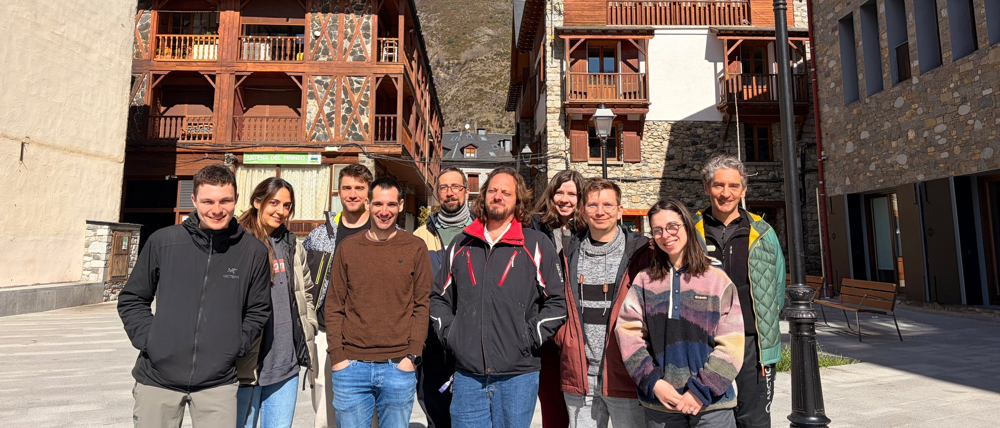
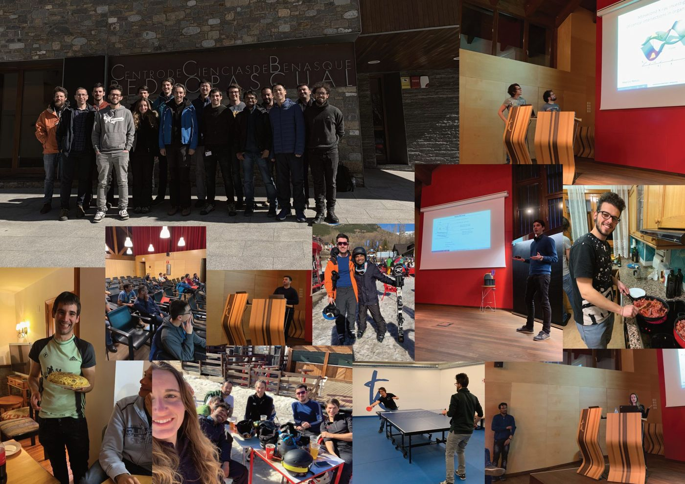
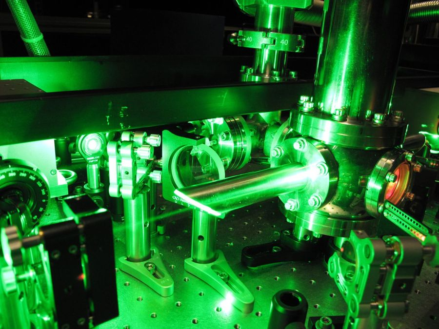
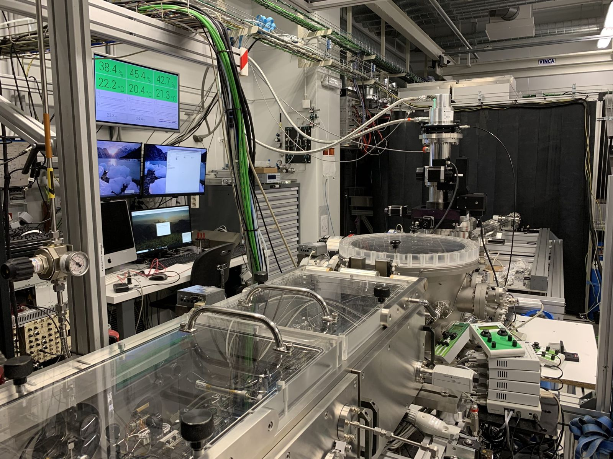

This is the home of Prof. Jens Biegert's Attoscience and Ultrafast Optics group at ICFO. We build attosecond and ultrafast light sources — and use them not merely to chase speed, but to open a new window into the many-body physics of matter: how charge, spin, lattice and nuclei exchange energy and entropy as materials transform and molecules react. Our work reaches from ultrafast laser development and extreme photonics to soft-X-ray spectroscopy, quantum materials, molecular imaging, and the quantum optics of high-harmonic generation.
Attosecond science is often told as a story about speed — the shortest pulses, the fastest electrons. Its real reach is wider: the properties of materials and the course of chemical reactions are set by the many-body interaction of electrons, holes and nuclei, and attosecond science now opens an entirely new view into it.
Write to us if you want to build cutting-edge setups, measure things nobody has measured, and apply the technique to new physics.
We look for a background in physics, chemistry or engineering, with some grounding in lasers, nonlinear optics, strong fields, spectroscopy, or ultrafast science. Direct experience in attosecond science or the spectroscopy of quantum materials is a bonus, not a requirement — what matters more is that you want to do this. Send a CV, a short note on what you want to work on, and why here.


